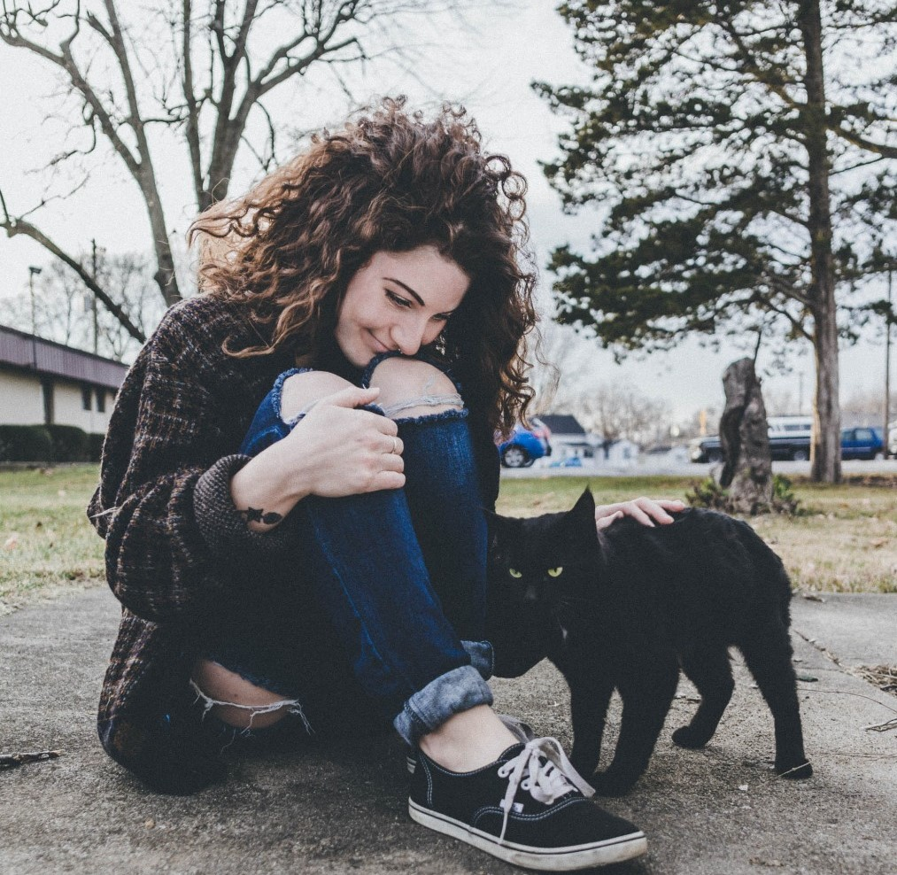
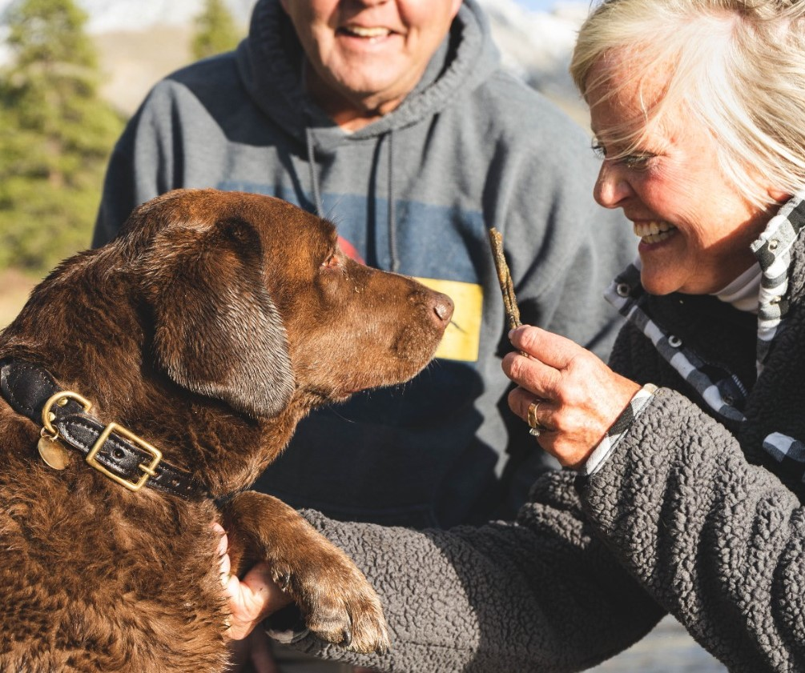

Mara
No pasa un 29 sin comer ñoquis y cada vez que se encuentra un animal en la calle, lo tiene que transitar.. Está claro que ama los animales pero su debilidad son los gatitos. Disfruta estar de entrecasa casi tanto como vivir sola. seguimiento y darle mucho amor al animalito transitado en ese momento. Además, trabaja freelance como Investigadora Social en una agencia de Publicidad.


Serafina
Como buena abuela, todos los fines de semana espera la visita de sus hijos y nietos con un budín o torta diferente. Tiene un jardín enorme el cual está lleno de plantas. Va con su esposo Nicolás y su perro KIMO todos los sábados por la mañana a pasear por diferentes viveros y se trae siempre una especie diferente para plantar.